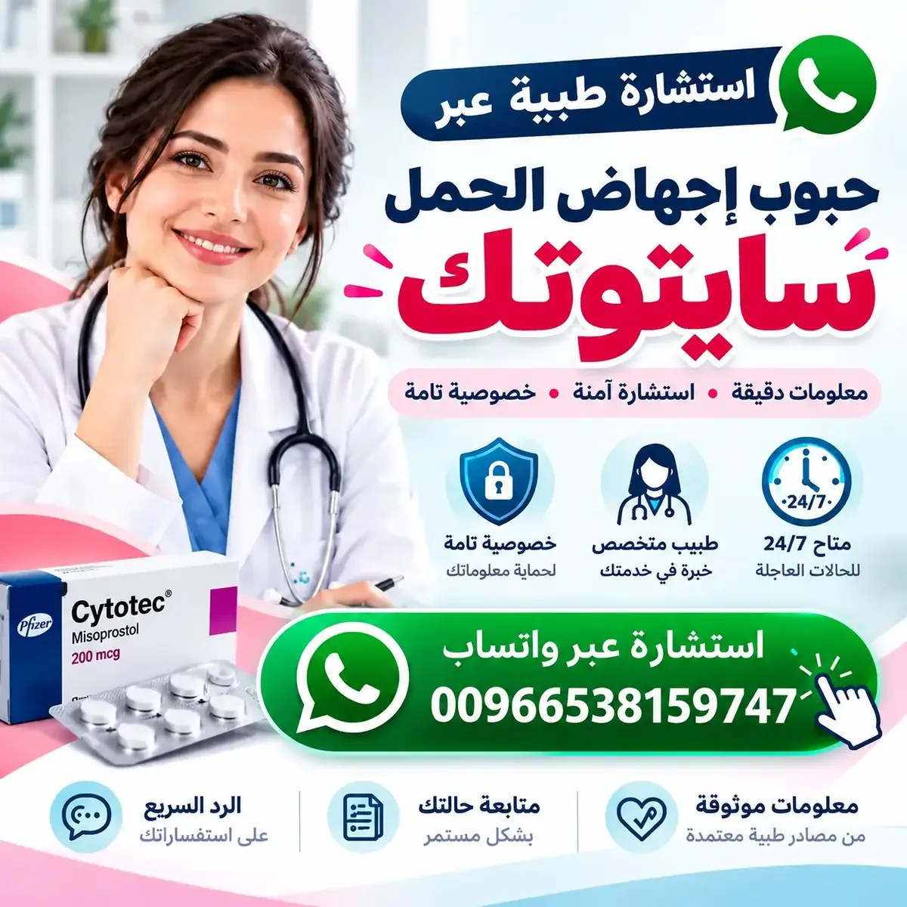

سايتوتك (Cytotec)
اسم تجاري لمنتج يحتوي على ميزوبروستول. تختلف دواعي الاستخدام والضوابط بحسب الحالة والبلد؛ تحققي من النشرة والمصدر الرسمي.
تعرّفي على المصطلحات المرتبطة بسايتوتك وميزوبروستول وميفيبريستون، وكيفية التحقق من المعلومات الدوائية والتنظيمية في السعودية ودول الخليج، مع تنبيهات مهمة للسلامة.
تنبيه: هذه الصفحة للتثقيف العام ولا تؤكد توافر دواء أو تسجيله أو السماح ببيعه أو استخدامه في أي دولة. لا تغني عن التقييم الطبي.

دليل معلوماتي باللغة العربيةفهم الاسم التجاري والمادة الفعالة يساعد على قراءة المصادر، لكنه لا يحدد وحده ملاءمة الدواء لحالة فردية.
اسم تجاري لمنتج يحتوي على ميزوبروستول. تختلف دواعي الاستخدام والضوابط بحسب الحالة والبلد؛ تحققي من النشرة والمصدر الرسمي.
مادة دوائية لها استخدامات طبية متعددة وقد ترتبط بآثار جانبية ومخاطر. لا تعتمدي على منشور عام لتحديد طريقة الاستخدام.
دواء يدخل في بروتوكولات طبية محددة في بعض الأنظمة الصحية. تختلف ضوابط استخدامه واعتماده محليًا.
صفحات معلوماتية منفصلة تحتوي على أسئلة شائعة وروابط للجهات الصحية والتنظيمية. لا يعني وجود صفحة محلية أن أي دواء متوفر أو مسموح بتسويقه.
استخدمي هذه النقاط لتقييم المحتوى الصحي قبل الاعتماد عليه.
راجعي الجهة الناشرة وتاريخ التحديث والنشرة الرسمية، ولا تعتبري الإعلان دليلًا على الاعتماد.
قد تكون المنتجات غير الموثقة مقلدة أو مخزنة بطريقة غير مناسبة أو مختلفة عن وصفها.
لا تستطيع صفحة عامة تقييم التاريخ الصحي أو تحديد علاج وجرعة مناسبة لشخص بعينه.
الألم الشديد أو النزيف الغزير أو الإغماء أو الحمى أو تدهور الحالة يستدعي رعاية طبية عاجلة.
معلومات عامة لا تحل محل الاستشارة الطبية ولا تؤكد توافر دواء.
سايتوتك اسم تجاري لمنتج يحتوي على المادة الفعالة ميزوبروستول. تحققي من النشرة والمنتج الرسمي ولا تعتمدي على الاسم وحده.
لا. لا تؤكد الصفحة التوفر أو التسجيل أو التصريح بالتسويق في أي دولة. راجعي الجهة التنظيمية المختصة.
لا ينبغي تحديد الجرعة أو القرار العلاجي من صفحة عامة؛ يلزم الرجوع إلى مختص صحي مؤهل ومعلومات طبية موثوقة.
عند الألم الشديد أو النزيف الغزير أو الإغماء أو الحمى أو تدهور الحالة، اطلبي رعاية طبية عاجلة ولا تنتظري ردًا عبر الإنترنت.
للمعلومات التنظيمية في السعودية، راجعي موقع الهيئة العامة للغذاء والدواء. وللدول الأخرى استخدمي الروابط الرسمية في صفحاتها المحلية.